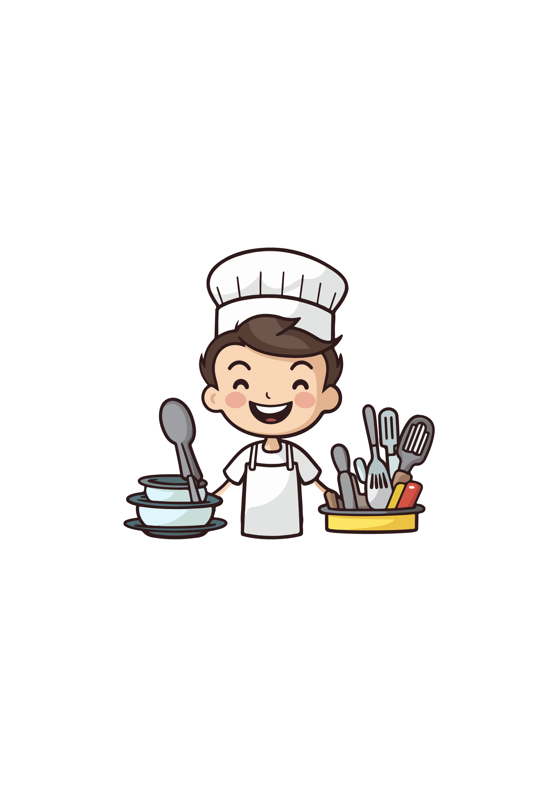

Meet Our Chef

Chef John Marco Paja
Executive Chef
Graduated from NCST(National college of Science and Technology) he is the Executive Chef from Marco's dining Establishment
and owner of the said restaurant.
Specialties
- Grilled Ribeye Steak
- Roast Chicken
- Grilled Salmon
Meet Our Chef
Chef Eugene Mirabueno
Sous Chef
Graduated from NCST (National college of Science and Technology), he is the Sous Chef from Marco's Dining Establishment
Specialties
- Chocolate Cake
- Apple Pie
- Croissant